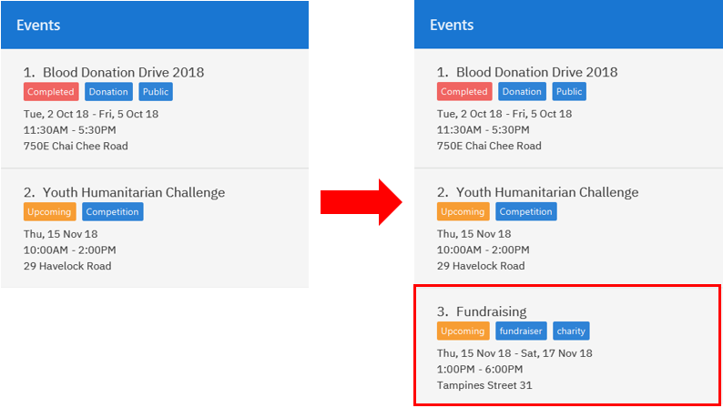

1. Overview
This portfolio documents my involvement in the SocialCare project, under the CS2103T Software Engineering module in NUS. The main scope of the module requires students to modify an existing application with an established code base while applying proper software engineering practices.
SocialCare is a desktop application designed to serve the volunteer and event management needs of non-profit organizations. Users primarily interact with the application using a Command Line Interface (CLI) with elements of a Graphical User Interface (GUI) to display information.
My contributions to the project focused on the event management features as well as improving upon the original GUI.
2. Summary of Contributions
-
Major enhancement: added the ability to undo/redo previous commands
-
What it does: allows the user to undo all previous commands one at a time. Preceding undo commands can be reversed by using the redo command.
-
Justification: This feature improves the product significantly because a user can make mistakes in commands and the app should provide a convenient way to rectify them.
-
Highlights: This enhancement affects existing commands and commands to be added in future. It required an in-depth analysis of design alternatives. The implementation too was challenging as it required changes to existing commands.
-
Credits: {mention here if you reused any code/ideas from elsewhere or if a third-party library is heavily used in the feature so that a reader can make a more accurate judgement of how much effort went into the feature}
-
-
Minor enhancement: added a history command that allows the user to navigate to previous commands using up/down keys.
-
Code contributed: [Functional code] [Test code]
-
Other contributions:
-
Project management:
-
Managed releases
v1.1-v1.3(3 releases) on GitHub
-
-
Enhancements to existing features:
-
Documentation:
-
Did cosmetic tweaks to existing contents of the User Guide: #14
-
-
Community:
-
PRs reviewed (with non-trivial review comments): #58,
-
Contributed to forum discussions (examples: )
-
Reported bugs and suggestions for other teams in the class (examples: )
-
Some parts of the history feature I added was adopted by several other class mates ()
-
-
Tools:
-
Integrated a third party library (Natty) to the project ()
-
Integrated a new Github plugin (CircleCI) to the team repo
-
-
{you can add/remove categories in the list above}
3. Contributions to the User Guide
Given below are sections I contributed to the User Guide. They showcase my ability to write documentation targeting end-users. |
3.1. Event Management
The following commands can only be accessed after switching to the 'event' panel. (see [command-switch])
3.1.1. Adding new event: add
Adds an event to the system.
Format: add n/NAME l/LOCATION sd/START_DATE ed/END_DATE st/START_TIME et/END_TIME d/DESCRIPTION [t/TAG]…
Example(s):
The figure below shows how the panel looks like before executing the example(s) below.

-
add n/Flag Day l/Yishun MRT sd/31-10-2018 ed/31-10-2018 st/09:00 et/15:00 d/For the children’s homeAdds an event with the properties specified in the command above. The expected result is shown in the figure below.
 Figure 2. Result of
Figure 2. Result ofadd n/Flag Day l/Yishun MRT sd/31-10-2018 ed/31-10-2018 st/09:00 et/15:00 d/For the children’s home -
add n/Fundraising l/Tampines Street 31 sd/15-11-2018 ed/17-11-2018 st/13:00 et/18:00 d/Raising funds t/fundraiser t/charityAdds an event with the properties specified in the command above. The expected result is shown in the figure below.
Figure 3. Result ofadd n/Fundraising l/Tampines Street 31 sd/15-11-2018 ed/17-11-2018 st/13:00 et/18:00 d/Raising funds t/fundraiser t/charity
3.1.2. Listing all events : list
Lists all events in the system and display them in the panel.
Format: list
Displays all existing events in the system in the panel.
The figure below shows a panel displaying all existing events after executing the list command.

list3.1.3. Editing event details : edit
Edit details of an existing event in the system when in the 'event' context.
Format: edit EVENT_INDEX [n/NAME] [l/LOCATION] [sd/START_DATE] [ed/END_DATE] [st/START_TIME] [et/END_TIME] [d/DESCRIPTION] [t/TAG]…
Example(s):
The figure below indicates the EVENT_INDEX and shows how the panel looks like before executing the example(s) below.
-
edit 1 n/Charity Fun Run t/
Edits the name of event at index 1 and removes all tags. The expected result is shown in the figure below. Figure 6. Result of
Figure 6. Result ofedit 1 n/Charity Fun Run t/
3.1.4. Deleting event: delete
Deletes an existing event in the system when in the 'event' context.
Format: delete EVENT_INDEX
Example(s):
The figure below indicates the EVENT_INDEX and shows how the panel looks like before executing the example(s) below.
-
delete 3
Deletes the event specified at index 3. The expected result is shown in the figure below. Figure 7. Result of
Figure 7. Result ofdelete 3
4. Contributions to the Developer Guide
Given below are sections I contributed to the Developer Guide. They showcase my ability to write technical documentation and the technical depth of my contributions to the project. |
4.1. Auto-incremented event ID
The auto-incremented event ID field is used by the Record class to identify unique events. An integer ID field is used because
the alternative method of identifying unique events based on multiple Event attribute fields would be computationally inefficient.
Current implementation
The auto-incremented event ID field is facilitated by the Event class. The Event class
keeps track of the highest ID in the system. Additionally, it implements two different constructors for different situations:
-
Event(Name name, Location location, Date startDate, Date endDate, Time startTime, Time endTime, Description description, Set<Tag> tags)This constructor is used when working with an event that does not yet exist in the system (e.g. adding a new event).
It increments the current highest event ID in the system and assigns that value to the new event that is created. This behaviour is illustrated in the code snippet of the
Eventclass below.// Used to keep track of current highest event ID in the system private static int maxId = 0; public Event(Name name, Location location, Date startDate, Date endDate, Time startTime, Time endTime, Description description, Set<Tag> tags) { ... incrementMaxId(); this.eventId = new EventId(maxId); ... } // Increments the current highest event ID by 1 private void incrementMaxId() { maxId += 1; } -
Event(EventId eventId, Name name, Location location, Date startDate, Date endDate, Time startTime, Time endTime, Description description, Set<Tag> tags)This constructor is used when working with an event that already exists in the system (e.g. loading data from XML file or editing an existing event).
It checks whether the ID of the event being initialised is greater than the current highest ID in the system. If this condition is true, the current highest event ID value will be replaced by the ID of the event being initialised. This behaviour is illustrated in the code snippet of the
Eventclass below.// Used to keep track of current highest event ID in the system private static int maxId = 0; public Event(Name name, Location location, Date startDate, Date endDate, Time startTime, Time endTime, Description description, Set<Tag> tags) { ... if (isEventIdGreaterThanMaxId(eventId.id)) { replaceMaxIdWithEventId(eventId.id); } ... } // Replaces current highest event ID with the ID of the event being initialised private void replaceMaxIdWithEventId(int eventId) { maxId = eventId; }
Design considerations
Aspect: How event ID is generated
-
Alternative 1 (current choice): Increment from highest event ID
Pros
Implementation is easy.
Cons
Maintained highest event ID may be susceptible to overwrite and become desynchronised.
-
Alternative 2: Randomly generated unique event ID
Pros
Not dependent on a maintained highest event ID variable (single point of failure).
Cons
Requires keeping track of all existing event IDs to ensure uniqueness.
5. PROJECT: PowerPointLabs
{Optionally, you may include other projects in your portfolio.}